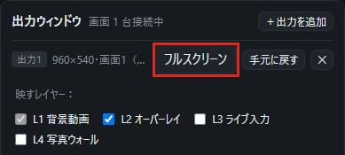
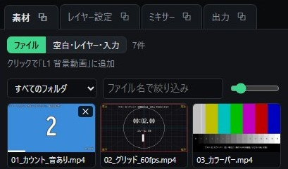
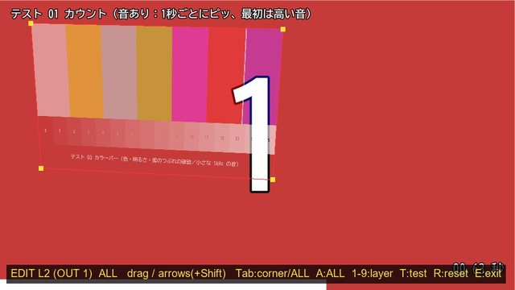
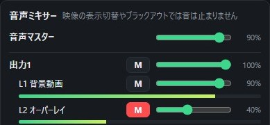
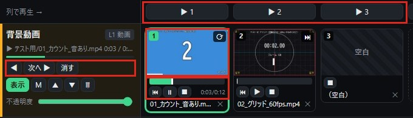
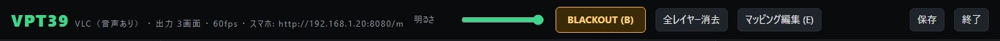

VPT39 フォルダの run.bat をダブルクリック。出力ウィンドウ（小さな黒い窓）と操作パネル（ブラウザ）が開きます。

2台以上は ＋出力を追加（横長につなぐのも可。詳細版4章）。


↑編集中の出力。黄色い点が四隅

1 2 3 4| よく使うキー（操作パネルでも、出力ウィンドウでも） | |
|---|---|
| Space | L1 だけを次のクリップへ（ほかのレイヤーは変わらない） |
| B | ブラックアウト（映像を0.5秒で暗く）。もう一度 B で戻る |
| E | マッピング編集のオン／オフ（本番中はオフ） |
| F・ダブルクリック | （出力ウィンドウ上で）フルスクリーンの切り替え |

A B C| 映像だけすぐ消したい | A BLACKOUT ボタンか B キー。音は流れたまま。戻すときはもう一度 |
| 音だけすぐ止めたい | 音声ミキサーの M。映像はそのまま（全部止めるなら各「出力」の M） |
| 映像を止めたい（静止） | クリップの ⏸（もう一度押すと続きから） |
| 枠・線・文字が映っている | B マッピング編集がオン → E でオフ。格子なら「テスト表示」をオフ |
| アプリを終える | C 終了（設定は保存される） |
| 困ったとき | まず見るところ |
|---|---|
| プロジェクターに何も映らない | プロジェクターの入力切替・ケーブル → 出力ウィンドウがその画面でフルスクリーンか → BLACKOUT が赤く光っていないか → 「明るさ」 |
| 出力ウィンドウが見当たらない | 「出力」タブの 手元に戻す（メイン画面の真ん中に戻る） |
| 違う映像が出ている | そのレイヤーの緑の枠のクリップ ／ 「レイヤー設定」の「映す出力」が正しいか |
| 音が出ない | ミキサーの M（赤）・フェーダー → PC の音量と出力先 → 上の帯が「VLC（音声あり）」か |
| 操作パネルを閉じてしまった | ブラウザで http://localhost:8080/ を開く（映像は止まっていない） |
| アプリが落ちた | ① プロジェクターの AV ミュート（リモコン）で客席を隠す ② run.bat ③ 出力が元の画面にフルスクリーンで出る（出なければ STEP2）④ クリップを押し直す（並び・形・音量は保存済み、再生位置は戻らない）⑤ AV ミュート解除 |